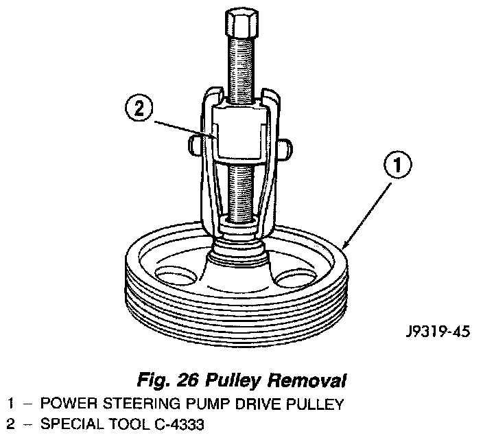
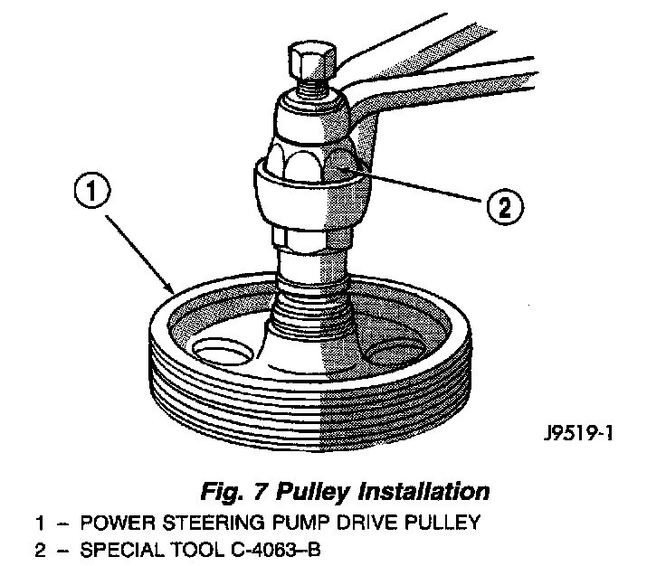

Power Steering Pump Pulley Replacement

REMOVAL
1. Remove pump assembly.
2. Remove pulley from pump with Puller C-4333, or equivalent.

INSTALLATION
1. Replace pulley if bent, cracked, or loose.
2. Install pulley on pump with Installer C-4063-B, or equivalent flush with the end of the shaft. Ensure the tool and pulley remain aligned with the pump shaft.
3. Install pump assembly.
4. With Serpentine Belts; Run engine until warm (5 min.) and note any belt chirp. If chirp exists, move pulley outward approximately 0.5 mm (0.020 inch). If noise increases, press on 1.0 mm (0.040 inch). Be careful that pulley does not contact mounting bolts.